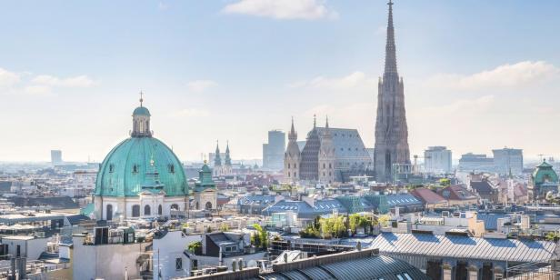

.png)
Price vojne historije
Dozivite nezaboravno iskustvo
Upoznajte historiju na potpuno novi nacin
Bec
Nasu pricu zapocinjemo tamo gdje i sve pocelo sa Price vojne historije. Istini za volju, nije prvi put u historiji da dogadjaji iz Sarajeva pokrenu krupne historijske dogadjaje. Jedno ime: Franz Josef. Dalje Vam je poznato.
Sarajevo, kojeg mnogi nazivaju i evropski Jerusalem ima mnogo da ponudi bilo kojem turisti. Medjutim, zaljubljenici u vojnu historiju ce uzivati. Sarajevo je grad koji je najduze bio pod opsadom u modernoj historiji, 44 mjeseca.
Sarajevo je grad gdje je zapaljena iskra koja je rasplamsala Evropu i gurnula je u Prvi svjetki rat koji je bio smrtno zvono za 4 velike imperije kao i zvono slobode za mnogobrojne narode.
Nemojte zaboraviti probati Sarajevske cevape, burek i baklavu :)
Plan "Operacije Sarajevo" (jednodnevni izlet):
- Zemaljskom muzeju BiH (cca 2-3h)
- Setnja od Zemaljskog muzeja ka starom gradu sa stajanjima:
- Marin dvor i Vrbanja most-Sjediste organa BiH i popriste stradanja
- Skenderija-Bitka za Predsjednistvo BiH, vodjena 2.maja.1992 izmeju ARBiH i JNA/VRS
- Alipasina dzamija i hastahana-Lokacija bitke iz 1878 iz rata BiH protiv Austro-Ugarske imperije. Takodjer, posjetit cemo lokaciju nekadasnje turske vojne bolnice
- Vjecna vatra-Spomenik borcima oslobodiocima Sarajeva u Drugom svjetskom ratu.
- Stara gradska jezgra-Posjete mjestima stradanja(Markale, Ferhadija), posjeta mjestu atentata na Franc Ferdinanda(opciono posjeta muzeju Sarajeva), posjeta Ministarstvu odbrane BiH posjeta Morica hanu (objektu iz rata za nezavisnost protiv Osmanlija), posjete Zutoj i Bijeloj tabiji (fortifikacijski objekti iz 18. stoljeca) i Vratnickoj kapiji(fortifikacijski objekt i ostatci zidina)
- Pauza za slobodne aktivnosti
- Posjeta muzeju "Tunel spasa"
- Stajanje i zaustavljanje po zelji grupe
Cijena: 60 Eura